Contents
MyMainScript
clear all
close all
clc
tic;
Your code here
input = imread('../data/barbara256.png');
figure;
imshow(input); colorbar;
title('Original image', 'Fontsize', 12, 'Fontname', 'Cambria');
[m , n] = size(input);
padded_input = padarray(input, [m/2, n/2]);
inputFT = fftshift(fft2(padded_input));
FT_plot = log(1+abs(inputFT));
figure;
imagesc(FT_plot, [min(min(FT_plot)) max(max(FT_plot))]); colorbar;
title('Log Fourier Transform of Original image', 'Fontsize', 12, 'Fontname', 'Cambria');
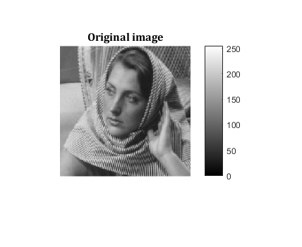 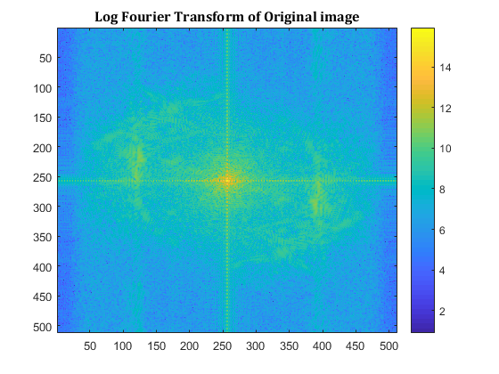
Ideal LPF with D = 40
iLPF_40 = iLPF(40, 2*m , 2*n);
FT_iLPF_40_plot = log(1+abs(iLPF_40));
figure;
imagesc(FT_iLPF_40_plot, [min(min(FT_iLPF_40_plot)) max(max(FT_iLPF_40_plot))]); colormap(jet); colorbar;
title('Log Fourier Transform of Ideal LPF with D = 40', 'Fontsize', 12, 'Fontname', 'Cambria');
op_FT_iLPF40 = inputFT.*iLPF_40;
op_FT_iLPF40_plot = log(1+abs(op_FT_iLPF40));
figure;
imagesc(op_FT_iLPF40_plot, [min(min(op_FT_iLPF40_plot)) max(max(op_FT_iLPF40_plot))]); colormap(jet); colorbar;
title('Log Fourier Transform of Output of Ideal LPF with D = 40', 'Fontsize', 12, 'Fontname', 'Cambria');
op_iLPF40 = real(ifft2(ifftshift(op_FT_iLPF40)));
op_iLPF40 = op_iLPF40(m/2+1:3*m/2 , n/2+1:3*n/2);
figure;
imshow(op_iLPF40, [min(min(op_iLPF40)),max(max(op_iLPF40))]);
title('Output of Ideal LPF with D = 40', 'Fontsize', 12, 'Fontname', 'Cambria');
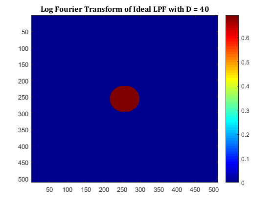 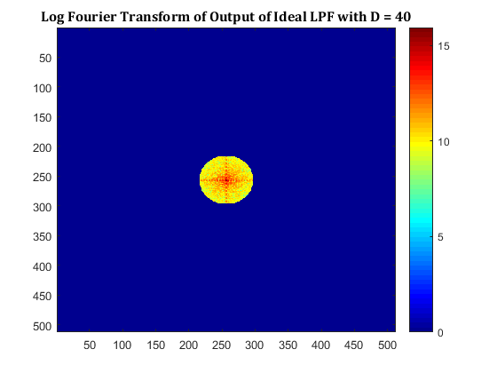
Ideal LPF with D = 80
iLPF_80 = iLPF(80, 2*m , 2*n);
FT_iLPF_80_plot = log(1+abs(iLPF_80));
figure;
imagesc(FT_iLPF_80_plot, [min(min(FT_iLPF_80_plot)) max(max(FT_iLPF_80_plot))]); colormap(jet); colorbar;
title('Log Fourier Transform of Ideal LPF with D = 80', 'Fontsize', 12, 'Fontname', 'Cambria');
op_FT_iLPF80 = inputFT.*iLPF_80;
op_FT_iLPF80_plot = log(1+abs(op_FT_iLPF80));
figure;
imagesc(op_FT_iLPF80_plot, [min(min(op_FT_iLPF80_plot)) max(max(op_FT_iLPF80_plot))]); colormap(jet); colorbar;
title('Log Fourier Transform of Output of Ideal LPF with D = 80', 'Fontsize', 12, 'Fontname', 'Cambria');
op_iLPF80 = real(ifft2(ifftshift(op_FT_iLPF80)));
op_iLPF80 = op_iLPF80(m/2+1:3*m/2 , n/2+1:3*n/2);
figure;
imshow(op_iLPF80, [min(min(op_iLPF80)),max(max(op_iLPF80))]);
title('Output of Ideal LPF with D = 80', 'Fontsize', 12, 'Fontname', 'Cambria');
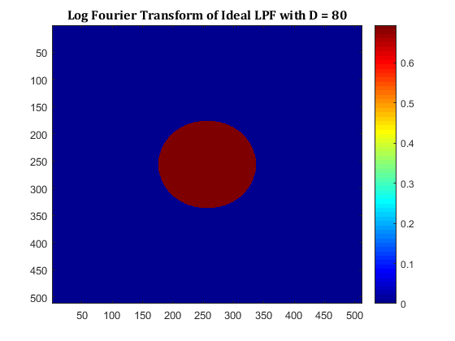 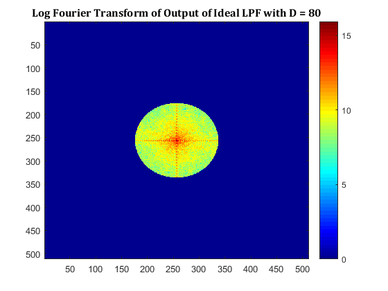 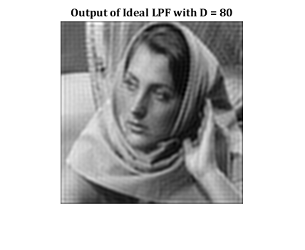
Gaussian LPF with sigma = 40
gLPF_40 = fspecial('gaussian', [2*m , 2*n], 40);
FT_gLPF_40_plot = log(1+abs(gLPF_40));
figure;
imagesc(FT_gLPF_40_plot, [min(min(FT_gLPF_40_plot)) max(max(FT_gLPF_40_plot))]); colormap(jet); colorbar;
title('Log Fourier Transform of Gaussian LPF with sigma = 40', 'Fontsize', 12, 'Fontname', 'Cambria');
op_FT_gLPF40 = inputFT.*gLPF_40;
op_FT_gLPF40_plot = log(1+abs(op_FT_gLPF40));
figure;
imagesc(op_FT_gLPF40_plot, [min(min(op_FT_gLPF40_plot)) max(max(op_FT_gLPF40_plot))]); colormap(jet); colorbar;
title('Log Fourier Transform of Output of Gaussian LPF with sigma = 40', 'Fontsize', 12, 'Fontname', 'Cambria');
op_gLPF40 = real(ifft2(ifftshift(op_FT_gLPF40)));
op_gLPF40 = op_gLPF40(m/2+1:3*m/2 , n/2+1:3*n/2);
figure;
imshow(op_gLPF40, [min(min(op_gLPF40)),max(max(op_gLPF40))]);
title('Output of Gaussian LPF with D = 40', 'Fontsize', 12, 'Fontname', 'Cambria');
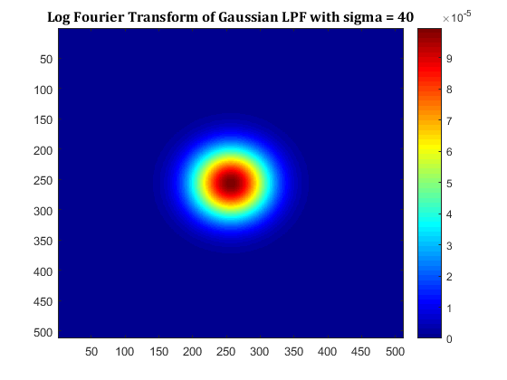 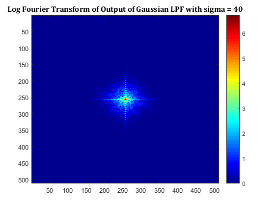 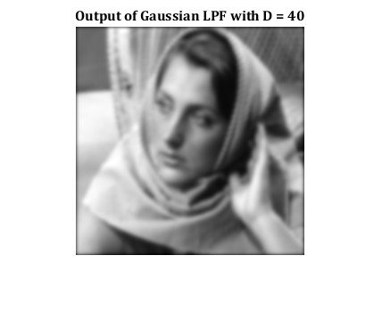
Gaussian LPF with sigma = 80
gLPF_80 = fspecial('gaussian', [2*m , 2*n], 80);
FT_gLPF_80_plot = log(1+abs(gLPF_80));
figure;
imagesc(FT_gLPF_80_plot, [min(min(FT_gLPF_80_plot)) max(max(FT_gLPF_80_plot))]); colormap(jet); colorbar;
title('Log Fourier Transform of Gaussian LPF with sigma = 80', 'Fontsize', 12, 'Fontname', 'Cambria');
op_FT_gLPF80 = inputFT.*gLPF_80;
op_FT_gLPF80_plot = log(1+abs(op_FT_gLPF80));
figure;
imagesc(op_FT_gLPF80_plot, [min(min(op_FT_gLPF80_plot)) max(max(op_FT_gLPF80_plot))]); colormap(jet); colorbar;
title('Log Fourier Transform of Output of Gaussian LPF with sigma = 80', 'Fontsize', 12, 'Fontname', 'Cambria');
op_gLPF80 = real(ifft2(ifftshift(op_FT_gLPF80)));
op_gLPF80 = op_gLPF80(m/2+1:3*m/2 , n/2+1:3*n/2);
figure;
imshow(op_gLPF80, [min(min(op_gLPF80)),max(max(op_gLPF80))]);
title('Output of Gaussian LPF with D = 80', 'Fontsize', 12, 'Fontname', 'Cambria');
toc;
Elapsed time is 25.845548 seconds.
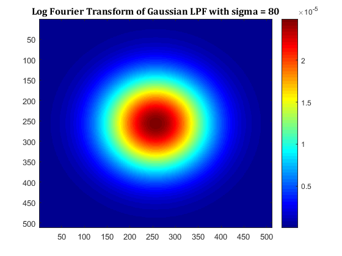 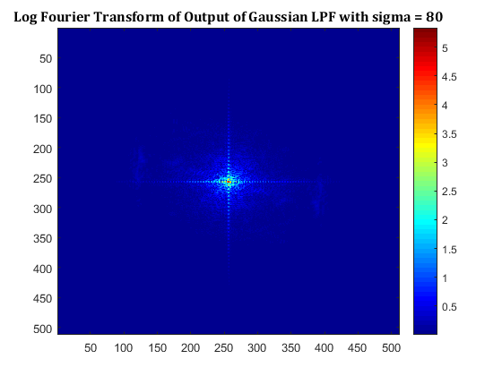 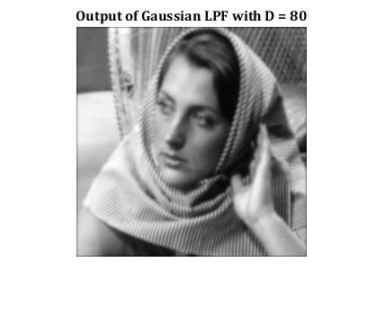